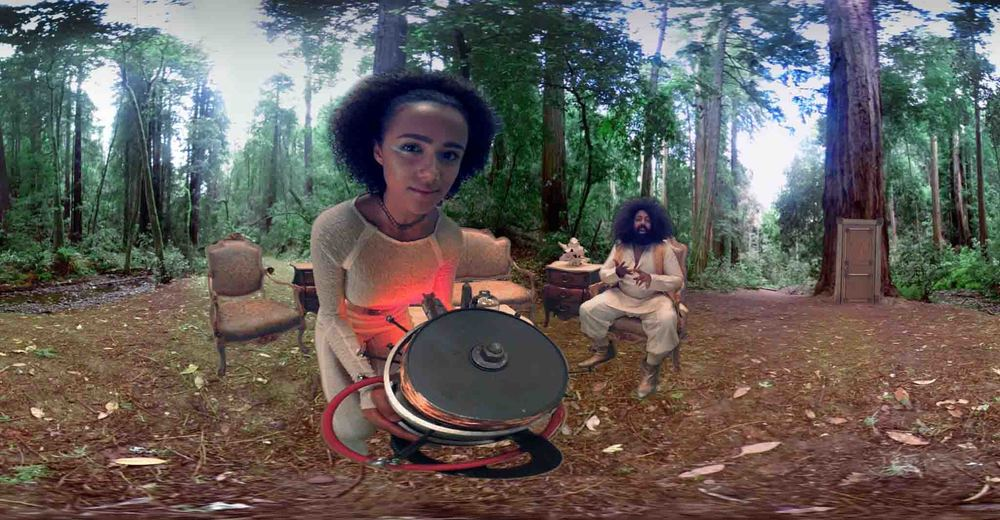
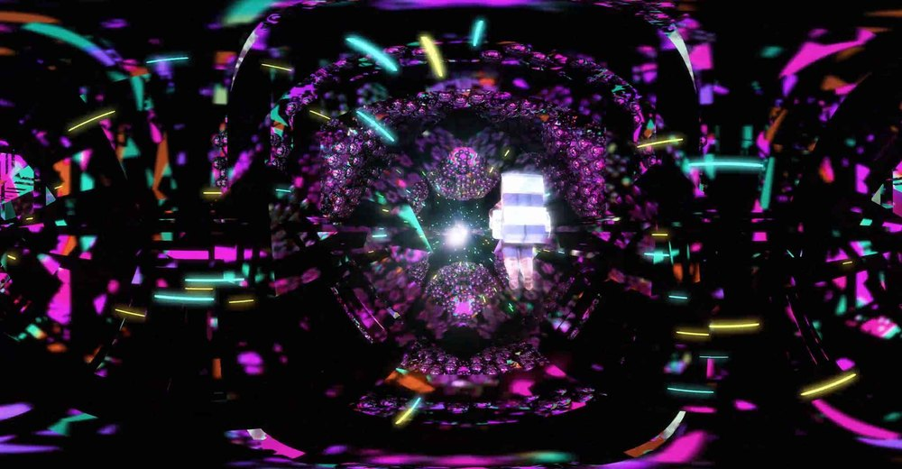
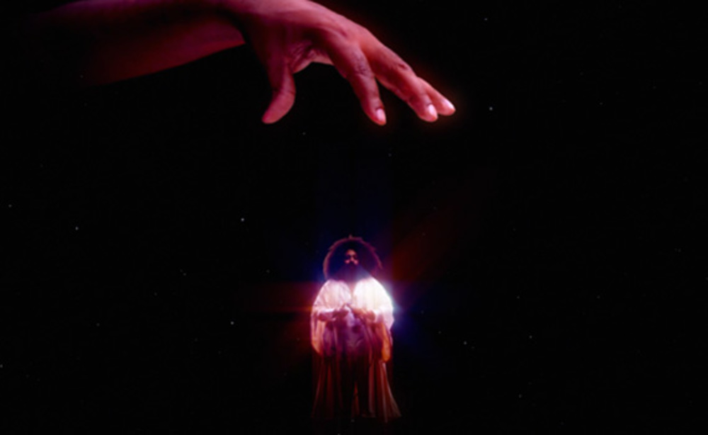
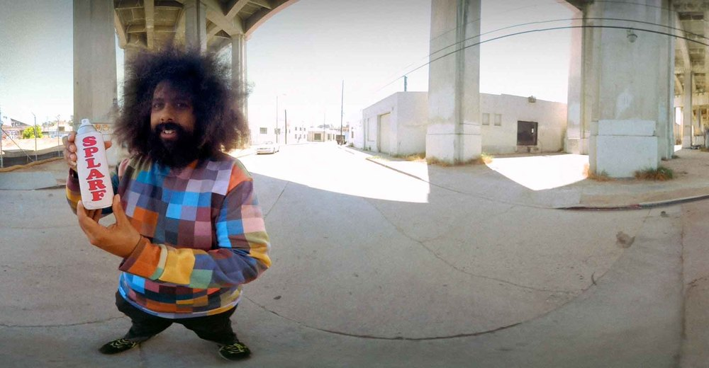
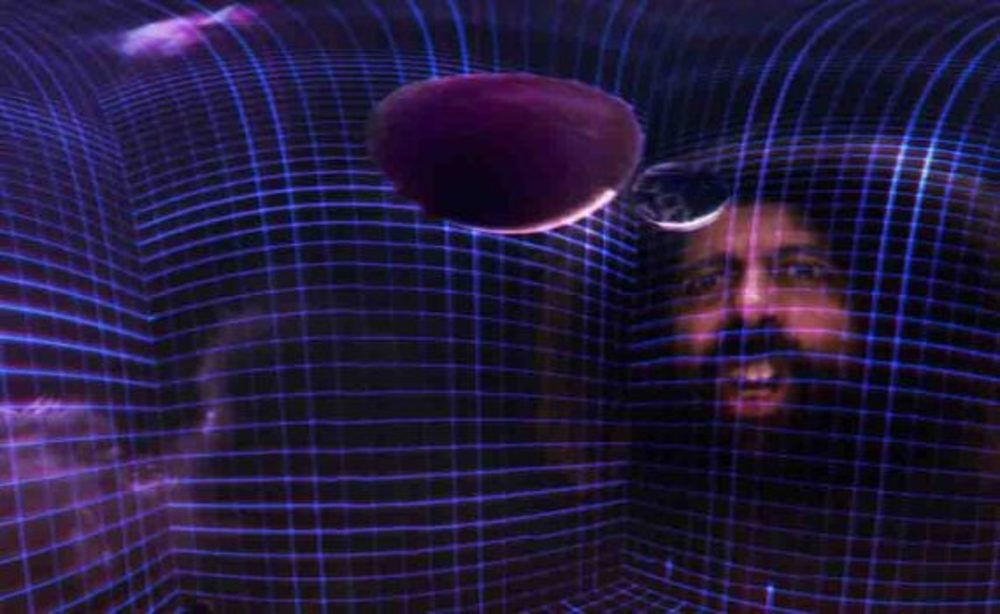
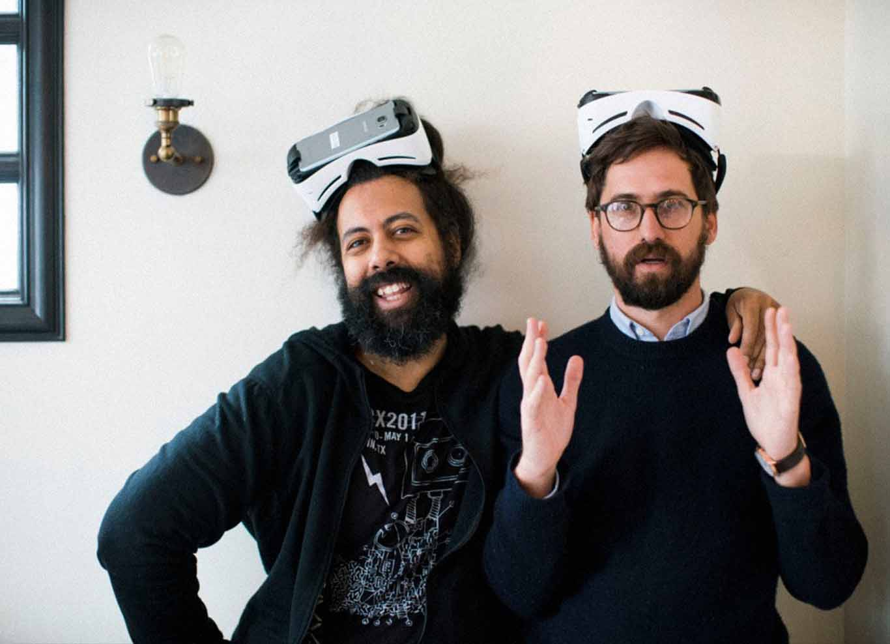

Burning with originality, intelligence, and a deft use of the medium, Reggie Watts weaves a virtual reality story that is a dream-within-a-dream meta-ride down the rabbit hole, where the only constants seem to be his philosophical musings, comedic insights, and musical genius.
"The idea was to do something in VR that was comical because a lot of the work I had seen was very serious. I wanted to do something silly and playful. Reggie (Watts) and I kept talking about Monty Python and Terry Gilliam’s animation. We initially envisioned the piece as an indoctrination video for a fake cult. The idea is that someone approaches you on the street. They ask if you want to come to a party and before you know it you’ve joined a cult. We intended it to be Psychedelic. The word etymologically means “visible breath”. Basically the point at which the invisible becomes visible. Reggie and I talked a lot about VR being like a parallel reality. We wanted to riff off the concept of virtual reality within a virtual reality piece. There is the white room and then you’re switching channels and within the virtual reality level you put on another VR helmet and enter a completely mental space." -Benjamin Dickinson/Director

"Since I was a little kid, I was interested in the idea of immersing myself in a virtual world by simply using the View-Master, which was really my first experience at looking at a stereoscopic image, its color, its analogue, its on film discs. It just looks so cool. As a kid, I was really interested in that feeling like you’re in another reality. And then you started seeing movies about virtual reality - Lawnmower Man was one, The Matrix, even the idea of time travel is a form of virtual reality. And what really excites me about VR is that it’s now possible.
I’ve known Ben Dickinson for a long time. He directed a lot of my videos. VR is something I have been dreaming about. It totally captivates me. Ben and I went about designing an experience that I thought would, in a creative sense, be fascinating as a viewer. But we also wanted to use the technology to create a fluid experience. I’m really into transitions. How do you cross from one reality to another?
I wanted to have a filmic element to it, because I think reality based immersion is kind of a great grounding place as opposed to just immediately going into some weird amorphous reality. I like this idea of being guided through the experience and also the idea of misdirection. I also thought it would be really funny to go inside of a simulation inside of the actual simulation. It was a dream of mine and also seemed a very clever way of transitioning to another reality.


We intended it to be Psychedelic. The word etymologically means “visible breath”. Basically the point at which the invisible becomes visible.
I knew I liked the idea of being on the street, and a car almost hitting you and me saying here’s a portal and that leading into another reality and a nod to the Matrix, a construct, you’re just in a white room, and I love the idea of her switching the reality with a device and seeing entirely different realities very easily changing. When you do that in VR it’s just shocking and it’s beautiful." -Reggie Watts
"I got excited about working with Reggie from the beginning. I was already familiar with his work and fascinated with the way he navigates the fringes of technology and creativity. He is a futurist, who distills elements of science fiction from our every day life. He thinks about VR and space travel and nanotechnology and implants and things like that at a different level than most people.

He is a futurist, who distills elements of science fiction from our every day life. He thinks about VR and space travel and nanotechnology and implants and things like that at a different level than most people.
With Waves we took a lot of chances and there is really nothing out there like it. VR is a nascent medium where we still need to figure out the language, or invent it if you will. We will only achieve this by pushing the boundaries of what we know. This is why it is so important that we collaborate with other filmmakers and storytellers. We learn from them as much as they learn from us when we teach them what we know about VR." -Luis Blackaller/ Creative Director
"Wevr’s goal is embracing creatives like Ben and Reggie and taking their ideas and kind of VRing them. We worked with them to refine their ideas so they were feasible and interesting as a VR experience. The end result surpassed all our expectations. They collaborated incredibly well and extended themselves to the medium in ways that we didn’t expect. The piece integrates Reggie into these fantastical worlds and some phenomenal animation. It really explores the merging of video and animation in VR in a way that we haven't seen before. There’s this mix of satirical comedy and music and immersive storytelling working all at once and we were totally blown away." -Anthony Batt/ Co-Founder Wevr.

Benjamin Dickinson & Reggie Watts
Benjamin Dickinson grew up in Wheaton, Illinois. After graduating from NYU's film program, he and some friends from school started Waverly Films. Benjamin started directing music videos for artists such as LCD Soundsystem and The Rapture and has directed commercials for Google and The Ford Motor Corporation. His critically-acclaimed first feature film, First Winter, premiered at the 2012 Tribeca Film Festival. His award-winning second feature, Creative Control, was released in 2016.
Reggie Watts is an internationally renowned Musician/Comedian/Writer/Actor who
stars as the bandleader on CBS’s The Late Late Show
with James Corden. As a solo performer, Watts brand of musical/comedy fusion
led to sold out tours in the U.S. and Europe, including festivals such as
Bonnaroo, SXSW, Bumbershoot and more. In 2010, Watts released his comedy
special, Why Shit So Crazy? Reggie co-hosted the critically acclaimed IFC
series, Comedy Bang! Bang! and co-starred in Universal Pictures’ omedy, Pitch Perfect 2. Watts was born in Germany, raised
in Montana, and currently resides in Los Angeles.